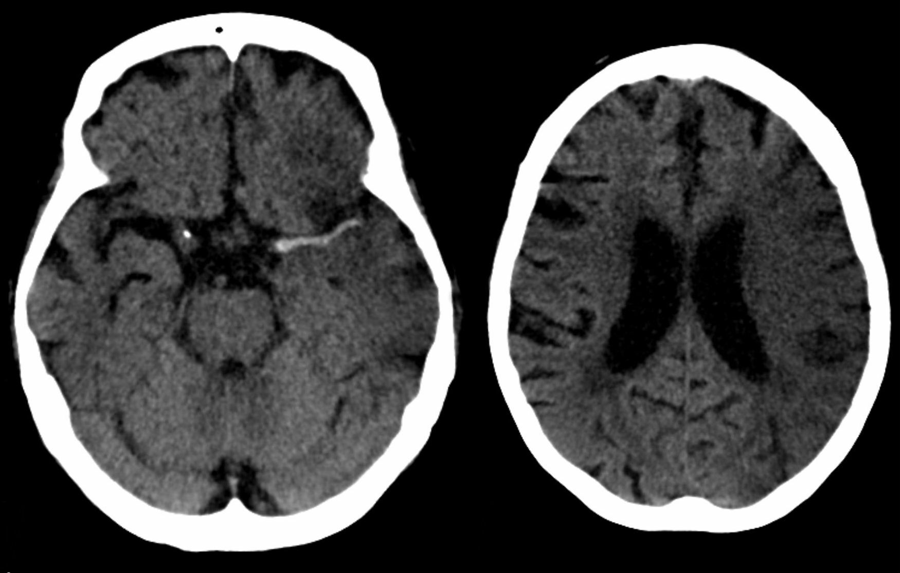
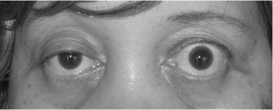
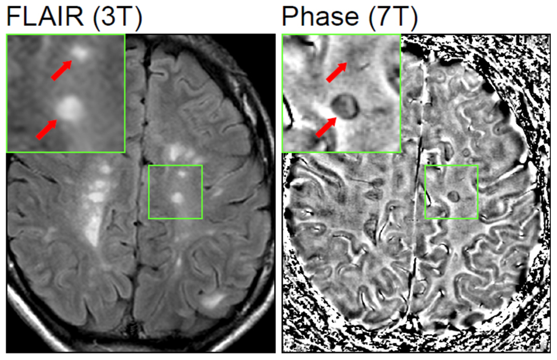

Neurological emergencies — 4-station clinical circuit
A teaching circuit modelled on the Saudi Board Final Clinical Examination. Each case is a single integrated station run as a structured oral: the candidate is given a scenario, requests data and images as needed, and is examined against a marked assessment sheet. Share the Candidate file over Zoom; ask your questions and mark here on your own screen.
- Interact professionally but neutrally — do not teach, coach, hint, or give feedback during the station.
- Release history, examination findings, results and imaging only when the candidate asks for them (use the reveal buttons).
- You manage time. To keep pace you may say: “In the interests of time, let's move to the next question” — reassure the candidate this has no bearing on their score.
- Ask the structured questions on the mark sheet. Score each item 2 = done adequately · 1 = partially / attempted · 0 = not done.
- Also give an independent global rating (Clear Fail → Clear Pass). Checklist and global together feed borderline-regression standard setting (the usual OSCE method; illustrative here).
Domains assessed (SCFHS): Data-Gathering Skills · Reasoning & Analytical Skills · Decision-Making Skills · Professional Attitude. Framework: CanMEDS.
Sudden weakness & slurred speech
Hyperacute assessment, imaging interpretation, reperfusion decisions, BP, complications.
Breathlessness & weak swallow
Recognition, bedside respiratory assessment, airway threshold, definitive therapy.
Painful visual loss in one eye
Localisation, MRI interpretation, ONTT-based treatment, MS relationship.
Prolonged, ongoing seizure
Timed pharmacological escalation, cause-hunting, refractory plan.
Acute ischaemic stroke
You are the on-call neurology registrar in the Emergency Department at 03:10. A 68-year-old man is brought in by his family with sudden right-sided weakness and slurred speech that began about 90 minutes ago.
- Last seen well 90 minutes ago; found unable to lift the right arm and speaking unclearly.
- Past history: hypertension, type 2 diabetes, atrial fibrillation — not on anticoagulation.
- No recent surgery, trauma or bleeding; on no anticoagulants; independent at baseline.
- Alert (GCS 15); dysarthric with expressive dysphasia (non-fluent, naming impaired).
- Forced gaze deviation to the left; right homonymous hemianopia.
- Right lower facial droop; right arm 1/5, right leg 2/5; reduced sensation and inattention on the right.
- NIHSS ≈ 18 (moderate–severe).

Myasthenic crisis
You are the medical registrar in the Emergency Department resuscitation area. A 34-year-old woman presents with three days of worsening breathlessness, nasal-sounding speech and difficulty swallowing. She can no longer lie flat.
- Known myasthenia gravis, maintained on pyridostigmine.
- Chest infection last week — started on azithromycin (a new antibiotic) by a clinic.
- Weakness is fatigable and worse towards the evening; no chest pain; no other new drugs.
- Bilateral fatigable ptosis; nasal dysarthria, weak cough, pooled secretions, poor swallow.
- Neck-flexion weakness; proximal fatigable limb weakness; reflexes preserved; no sensory loss.
- Using accessory muscles; cannot complete a sentence in one breath.

Optic neuritis / first presentation of MS
You are the on-call neurology registrar in the Emergency Department. A 27-year-old woman presents with four days of progressive blurring and dimming of vision in her left eye, with pain that is worse on eye movement and colours that look “washed out”.
- Six months ago: transient numbness of the right leg lasting about two weeks — not reported at the time.
- Otherwise well; no regular medications; no bladder or bowel symptoms.
- No recent illness; non-smoker.
- Reduced acuity left (6/24); marked red desaturation left eye.
- Relative afferent pupillary defect (RAPD) on the left; central scotoma; pain on eye movement.
- Fundus normal (retrobulbar) — swelling would indicate papillitis; normal in ~2⁄3.
- Other cranial nerves and limbs normal today.
- MRI orbits (coronal fat-sat T2 / post-gad T1): mild enlargement, T2 hyperintensity and subtle enhancement of the left optic nerve — in keeping with optic neuritis.

Convulsive status epilepticus
You are the medical registrar leading the resuscitation. A 24-year-old man has just arrived by ambulance and is convulsing — generalised tonic–clonic activity that, according to the paramedics, has been continuous for at least 8 minutes.
- Known epilepsy; ran out of his medication a few days ago.
- Paramedics gave one dose of a benzodiazepine ~4 minutes ago with no effect.
- No trauma reported; no fever; no other collateral available.
- After a full-dose IV benzodiazepine he is still convulsing at ~15 minutes.
- You give a second-line IV antiseizure medication at full loading dose.
- Seizure continues at ~35 minutes → refractory status: prepare for intubation, anaesthetic infusion, ICU and continuous EEG.